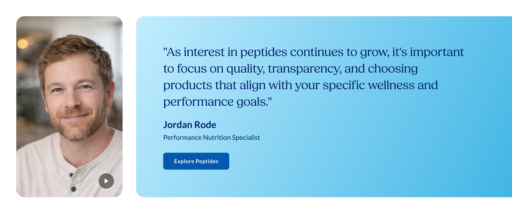
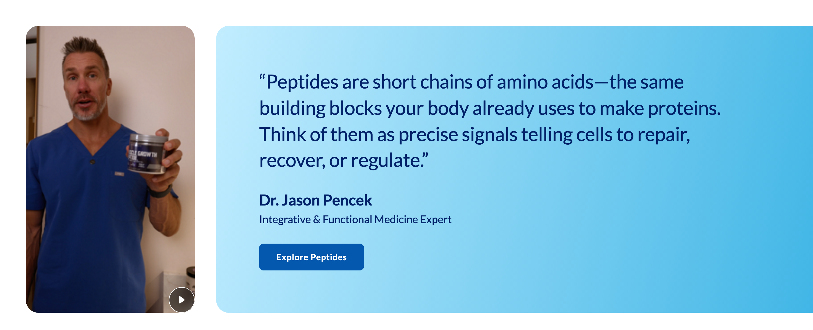
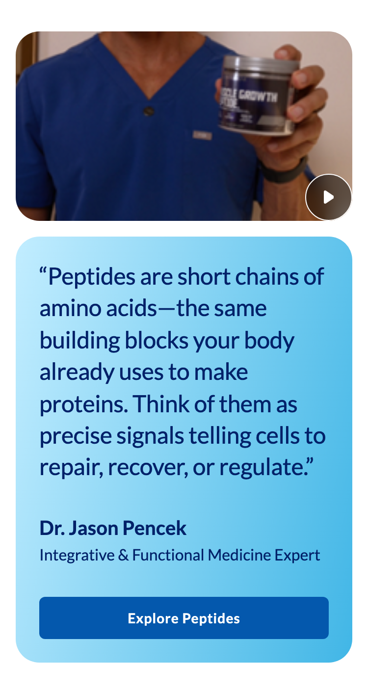
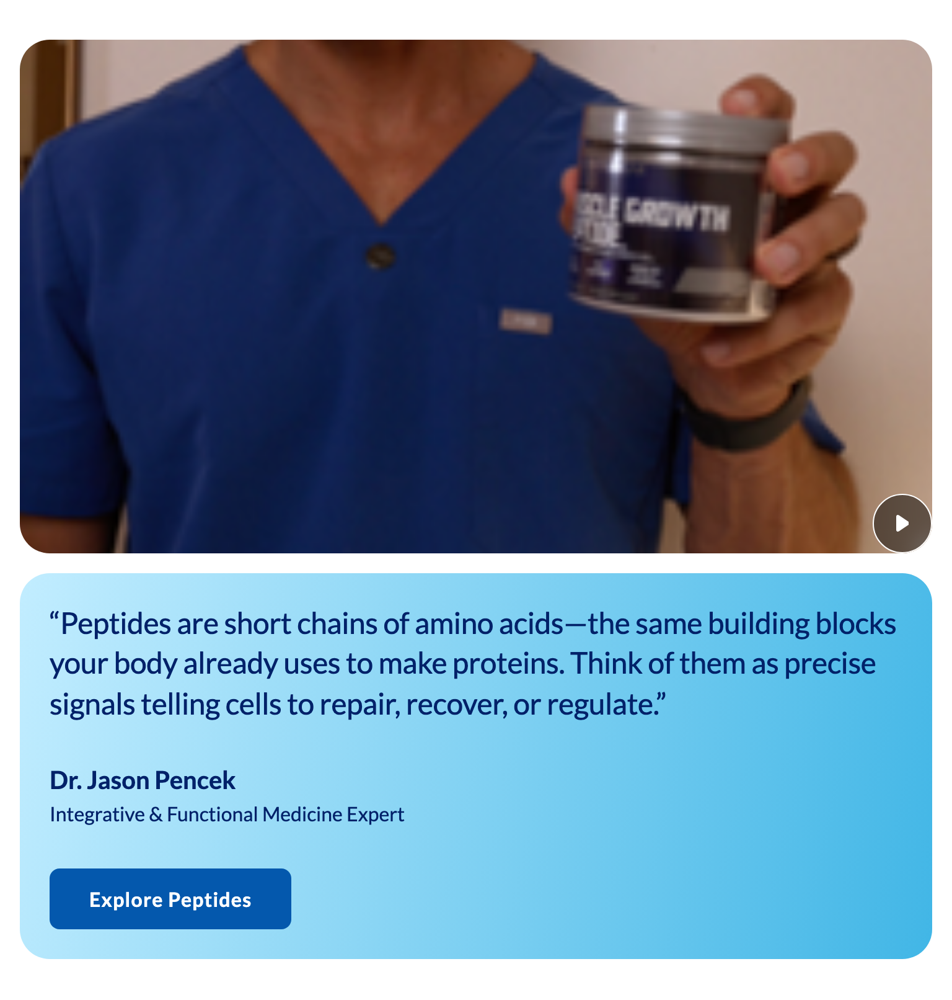
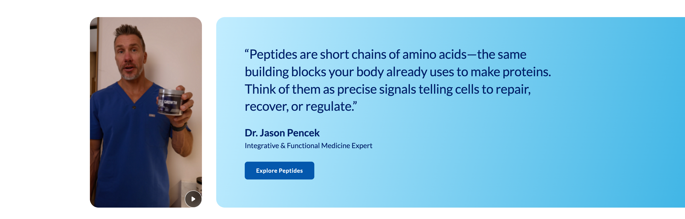

Platter component
Expert Module
Transcribed from Confluence, authored by Sarah Lee. It is the client's spec, reproduced verbatim in substance. Where our implementation deviates it is recorded under Deviations, not by editing the spec.
Spec: https://getplatter.atlassian.net/wiki/spaces/TVS/pages/888635418/FSD+Expert+Module
02 — Screenshots
How it renders
Wipe the handle across the design to find where the build drifts from it. The Figma frame and the capture are exported at the same width, so anything that moves under the handle is a real difference. Every width is below as a plain capture.





03 — Fields
What a merchandiser fills in
Generated from _schema.ts, in the order Amplience shows them.
| Field | Type | Constraints | Description | |
|---|---|---|---|---|
assetTypeMedia shape |
string | required | portrait · circledefault "portrait" |
Portrait is a tall 9:16 card beside the quote, and is the only shape that can hold a video. Circle is a round 1:1 headshot inside the same card as the quote, with a vertical rule between them — it makes a shorter module, so use it when the expert is supporting the page rather than leading it. Changing this changes the whole layout, not just the crop. |
imageExpert photo |
string | required | min 1 | Full URL of one photo, used at every screen size. Crop it to 9:16 for Portrait or square for Circle before upload — the module fills the shape and will crop the sides off a photo that is the wrong way round. On phones the Portrait card becomes a wide 16:9 band cut from the middle of the same photo, so keep the subject centred and leave room above and below their face. When a video is set this photo is what shows until someone presses play, so pick a frame that represents it. |
imageAltPhoto alt text |
string | required | min 1 | Describe the person, e.g. "Jordan Rode, smiling, in a light henley". Required for accessibility. |
videoVideo (optional) |
string | Full URL of an .mp4. Leave empty for a photo-only module. Adding one puts a play button on the photo and opens the video in a pop-up when pressed. Vertical 9:16 footage only, and only with the Portrait shape — a video on Circle is ignored. Three things about the file itself, because getting them wrong is invisible until a shopper presses play and nothing happens: it must be H.264 (a phone or an editor exporting AV1 or HEVC will not play for many iPhone users), it should be saved for web streaming so it starts before it has finished downloading, and it should be under about 5MB. A 12-second clip at 1080x1920 fits comfortably in that. | ||
quoteQuote |
string | required | max 200 min 1 |
What the expert said, in their words. Do not type quotation marks — the module adds them. Capped at 200 characters; the card grows taller to fit rather than cutting the quote off, which on Circle also pushes the photo column taller. Formatting: **bold**, _italic_, and ~12~ for subscript. A registered mark (®) is raised automatically, and a plain asterisk is never formatting. |
expertNameExpert name |
string | required | max 40 min 1 |
The person being quoted, e.g. "Jordan Rode". This also names the section for screen readers, so it is required even though the design shows it small. Formatting: **bold**, _italic_, and ~12~ for subscript. A registered mark (®) is raised automatically, and a plain asterisk is never formatting. The screen-reader name uses the plain text, so a mark never reaches it. |
expertCredentialCredential |
string | max 60 | Their title or qualification, e.g. "Performance Nutrition Specialist". Leave empty to hide it. On Circle this sits in a narrow centred column under the photo, so anything past about 40 characters wraps to three lines — keep it short. Formatting: **bold**, _italic_, and ~12~ for subscript. A registered mark (®) is raised automatically, and a plain asterisk is never formatting. | |
backgroundStyleCard background |
string | gradient-blue · light-blue · pale-blue · whitedefault "gradient-blue" |
The colour behind the quote. Blue gradient is the design default. The other three are flat colours for pages that already have a lot of blue. Every option here has been contrast-checked against the navy text, so prefer one of these — the two fields below override it and are not checked for you. | |
backgroundColorCard background colour (overrides the preset) |
string | One flat colour of your choosing, used instead of the preset above. The quote, name and credential are always navy #012169, so pick something light: a mid or dark colour leaves the text unreadable and fails the accessibility standard this page is held to. Leave empty to keep the preset. | ||
backgroundGradientCustom gradient (advanced, overrides both) |
string | max 300 | A CSS gradient, used instead of both settings above. Copy the shape of the design's own: linear-gradient(103deg, #c2edff 0%, #41b6e6 100%) — an angle, then each colour with the position it reaches. Full syntax and more examples: https://developer.mozilla.org/en-US/docs/Web/CSS/gradient/linear-gradient. The same navy-text warning applies. A value the browser cannot read is ignored and the preset comes back, so always load the page after saving. Background images are not accepted here. | |
ctaLabelButton label |
string | max 30 | The call to action. The button only renders when both a label and a link are set. Formatting: **bold**, _italic_, and ~12~ for subscript. A registered mark (®) is raised automatically, and a plain asterisk is never formatting. | |
ctaUrlButton link |
string | max 500 | Where the button goes. Use a relative path for vitaminshoppe.com destinations. | |
ctaStyleButton colour |
string | dark · light · outlinedefault "dark" |
Dark is #0458AD with white text and is the right choice on every background in the list above. Light is white with #0458AD text and a thin outline — it only reads properly on the blue gradient or flat blue, and disappears on the white card. | |
priorityPrioritise image loading |
boolean | default false |
Switch on when this module is the first thing on the page, so the photo loads immediately instead of lazily. | |
sectionIdSection ID |
string | max 50^[a-z][a-z0-9-]*$ |
A name for this specific module, used for two things. A link anywhere on the site can jump straight to it by ending the URL with # and this name, e.g. #meet-jordan. Page-level CSS can also target this one module rather than every expert module. Use lowercase letters, numbers and hyphens, start with a letter, and make it unique on the page — two modules sharing an ID will break the jump link. Leave empty if you need neither. |
04 — Sample content
A filled-in example
From _content.json. This is what the screenshots above are rendering.
{
"assetType": "portrait",
"image": "https://s7media.vitaminshoppe.com/is/image/VitaminShoppe/Peptides_DrJason_Thumbnail",
"imageAlt": "A six-panel summer collage: grilling chicken, Quest and Ghost products in a car boot, drinking from a can, carrying a cooler by a pool, a pool float, and press-ups on grass",
"video": "https://fastly-signed-us-east-1-prod.brightcovecdn.com/media/v1/pmp4/static/clear/5380177756001/004ea726-f954-4082-9997-689fd6fa725a/9301f2f2-fd3c-4eac-be77-cd9e8c8a4690/main.mp4?fastly_token=NmE4ZGZkMjhfNzY4OWJjMjYyZmZhOTlmNmE4YjAzNmQyOWRjODkwM2ZhMWRkMjQ5MmUxMzAxNmJlMWNjOWE0YzVlMmE5MzdhM18vL2Zhc3RseS1zaWduZWQtdXMtZWFzdC0xLXByb2QuYnJpZ2h0Y292ZWNkbi5jb20vbWVkaWEvdjEvcG1wNC9zdGF0aWMvY2xlYXIvNTM4MDE3Nzc1NjAwMS8wMDRlYTcyNi1mOTU0LTQwODItOTk5Ny02ODlmZDZmYTcyNWEvOTMwMWYyZjItZmQzYy00ZWFjLWJlNzctY2Q5ZThjOGE0NjkwL21haW4ubXA0",
"quote": "Peptides are short chains of amino acids—the same building blocks your body already uses to make proteins. Think of them as precise signals telling cells to repair, recover, or regulate.",
"expertName": "Dr. Jason Pencek",
"expertCredential": "Integrative & Functional Medicine Expert",
"backgroundStyle": "gradient-blue",
"ctaLabel": "Explore Peptides",
"ctaUrl": "#bodytech-elite",
"ctaStyle": "dark",
"sectionId": "expert-advice"
}05 — Design reference
Design reference
The Confluence page embeds four screenshots; the frames below are the same four designs on the Figma file, which is the authority for measurements.
| Variant | Desktop | Mobile |
|---|---|---|
| Video (Portrait, 9:16) | Figma 18227:294156 — 1512 × 615 | Figma 18227:294435 — 375 × 666 |
| Image (Circle, 1:1) | Figma 18099:183262 — 1512 × 486 | Figma 18099:177828 — 375 × 633 |
Both mobile frames carry a 768px and below browser-size token, so the module's breakpoint is the same md: step every other section uses. Heights are Hug in Figma, so the numbers above are the design's content height, not a fixed frame.
06 — User requirement
User requirement
- User can view the expert photo, or tap/click the play button overlay to play the vertical video.
- User can click the CTA button to navigate to the linked destination.
07 — Admin requirement
Admin requirement
| Content type | Functional requirement | Asset / copy requirement | Responsive & content behavior |
|---|---|---|---|
| Asset Type (Required) | Admin can toggle Portrait vs Circle. This also changes the background card display. | Portrait aspect ratio 9:16. Circle aspect ratio 1:1. | – |
| Media – Image (Required) | Admin can upload an image. Image is used as thumbnail image when Video is uploaded. Admin can upload alt text for each image. | Media card sits left of the quote card on desktop; stacks above the quote card, full-width, on mobile. | |
| Media – Video (Optional) | Admin can upload .mp4 video. | Video. Max size: TBD. | |
| Play Button Overlay (Video only) | Renders automatically when the video variant is selected. Not admin-configurable. | – | Position is fixed relative to the media card at every breakpoint. |
| Video Modal | Clicking the video opens a modal with native video controller UI included. | ||
| Quote (Required) | Admin can input the expert quote. | Copy: 200 character limit. | Card expands/shrinks vertically to fit the quote. |
| Name (Required) | Admin can input the expert's name. | – | |
| Credential (Optional) | Admin can input the expert's credential (e.g. "Performance Nutrition Specialist"). | – | |
| Button (Optional) | Admin can input a CTA label and destination URL. Admin can change the button color (Dark vs. Light), consistent with the Slim Hero Banner's button field. | ||
| Background Color (Required) | Admin can choose color background. | Solid. Gradient. | – |
08 — Other requirements
Other requirements
- Analytics: component supports automated impression tracking (viewport entry) and click tracking via the standard
raiseEventhandler.
09 — Open comments
Open comments
Sarah Lee — unanswered 2026-07-29
unanswered 2026-07-29
@Felix Tellmann ready for your review
Felix Tellmann — unanswered 2026-08-05
unanswered 2026-08-05
Raised against the Figma after transcription. Numbered so they can be answered individually. A copy formatted for pasting into Confluence is in docs/expert-module-fsd-review.txt.
- The quote is set in a font the storefront does not have. Figma's
typography/family/primaryresolves to Fields, which is not@font-face-declared on vitaminshoppe.com and is not in the font list Chirag sent on 2026-07-29. It is built in Lato for now. Either the font gets licensed and hosted, or the frames should move to Lato — right now the design and the storefront disagree. - Portrait and Circle are two different layouts, not one layout with a different crop. "This also changes the background card display" is carrying a lot. In Portrait the media is its own card and the quote card bleeds off the right edge of the viewport; name and credential sit under the quote, left-aligned. In Circle it is a single inset card, the avatar sits in its own left column with name and credential centred beneath it, and a vertical rule separates that column from the quote. I can build both off one toggle, but the FSD should describe both so QA has something to test against.
- "Solid / Gradient" is now built both ways, which needs a decision. The default is a named list of four backgrounds checked for contrast against the navy quote text, with a colour picker and a free gradient field behind it. The override is not contrast checked, so a merchandiser can still put navy text on a dark card. Worth deciding whether they should have that second path at all.
- Video is not buildable as written. Max size is TBD, and there is no decision on where the .mp4 is hosted. Captions aren't mentioned either, and a talking-head video without them fails the accessibility requirement we've already committed to.
- The video modal is one sentence. It needs focus handling, Escape to close, what closes it on mobile, and whether the modal is portrait. It's the biggest build item in the module and the least specified.
- There's no heading field anywhere in the module. Every other section has one because of the Global SEO rule, and without it this section has no accessible name. Worth deciding whether the expert's name carries that role or whether we add an optional heading.
- Impression tracking is still blocked. Same as Slim Hero Banner A: no impression event name exists in any TVS template, so there's nothing to call. A video-play event has the same problem.
- Name and Credential have no character limits while Quote has 200. In the Circle layout both sit in a narrow centred column, so a long credential wraps to three lines. Worth putting numbers on them.
10 — Deviations
Deviations
Figma is the primary source of truth for this module, so where the frames and the FSD disagree the frames win and the gap is recorded here.
Quote typeface — Figma asks for a font the storefront does not serve
Built Lato
The quote is styled typography/family/primary, and that variable resolves to Fields. Only Lato and Corisande are @font-face-declared on the live vitaminshoppe.com, and Fields is in neither Chirag's 2026-07-29 font list nor any downloaded TVS template — so shipping it would need a licence and a webfont neither of which exists today. Built in Lato, which the design system names family/secondary and already uses for the name and credential. Visible consequence: Lato sets narrower than Fields, so the design's four-line quote sets in three at the same 36px, and the card is correspondingly shorter than the 615px frame. Nothing is clipped. Needs a decision from TVS: licence Fields, or accept Lato and update the frames.
Portrait and Circle are one content type with a toggle
Built assetType, two layout branches
The FSD asks for a toggle, so this is one content type, unlike Slim Hero Banner A/B which the FSD explicitly told us to split. The cost is that "this also changes the background card display" turns out to mean two genuinely different layouts: Portrait puts the media in a card of its own with name and credential under the quote, Circle puts a round avatar inside the single card with name and credential beneath it and a 3px rule between that column and the quote. Only one branch is ever in the DOM. See the Open comment asking for both to be described in the spec.
Mobile changes the media's aspect ratio, which the FSD does not mention
Built one image, object-cover at both ratios
Figma 18227:294436 makes the Portrait media 343 × 193 — 16:9 landscape on phones, against 314 × 535 portrait on desktop. The FSD says only that the media "stacks above the quote card, full-width, on mobile", which reads as the same crop.
A desktop/mobile image pair was built first, copying the hero banner, and removed 2026-08-06. One asset per instance is what the FSD review already told the client this module takes, and a second upload field is a second thing a merchandiser can leave empty or fill with the wrong shape. The single photo is object-cover-cropped to each ratio instead. The cost is real and is not hidden: a 9:16 source shows a band cut from its middle on phones, so the field description carries the guidance that makes that survivable — keep the subject centred, with room above and below the face. Circle is 1:1 at both breakpoints and is unaffected.
The Portrait quote card bleeds off the right edge
Built no right padding, border-radius: 24px 0 0 24px
Not in the FSD at all, and not something an implementer would infer from it. The Figma frame has padding-right: 0 and the card's right corners are square, so the gradient runs to the viewport edge. Built faithfully at every width rather than only at 1512. The quote's own measure is capped at the design's 902px so a wide monitor does not stretch it to an unreadable line length — the card grows, the text does not.
Above 1512 the Portrait media aligns to a centred container
Built padding-left: max(48px, calc((100vw - 1416px) / 2))
Figma draws one desktop frame, at 1512, so anything wider is undefined. A flat 48px inset would leave the media pinned to the far left of a 2560px monitor while the card bleeds right, which reads as detached rather than full-bleed. The left inset instead tracks where a centred 1416px container would start. This is a no-op at the reference width — (1512 − 1416) / 2 is exactly 48 — and clamps to 48px on anything narrower, so only above 1512 does it change anything. The right edge still bleeds, because that is the design.
Background colour is a checked list first, with two overrides behind it
Built four named options, plus a colour picker and a custom gradient
The FSD's "Admin can choose color background. Solid / Gradient" names no colours and no constraint. The default path is an enum — the Figma gradient, flat light blue, flat pale blue and white — all four keeping #012169 text at or above 6.8:1, so a merchandiser who touches nothing cannot produce an unreadable card.
Two optional fields override it, added 2026-08-06 at TVS's request: backgroundColor (format: "color", the built-in picker TVS already uses on cs-components-video-takeover.fontColor) and backgroundGradient, a raw CSS value whose description links to MDN's linear-gradient reference. Precedence is gradient, then colour, then preset.
Neither override is contrast-checked, and the quote stays navy. That is the known cost of the freedom, stated in both field descriptions rather than engineered around; the alternative considered and not taken was deriving the text colour from background luminance, which guarantees contrast but lets the module render in a palette nobody designed. The bounded list remains the recommended path, so the Open comment asking TVS for a defined set still stands — it is now a recommendation rather than the only option.
backgroundGradient is free text, so it is checked twice before it is used.
CSS.supports('background-image', value) because a malformed value does not degrade gracefully: var()'s fallback covers an unset variable, not an invalid one, so a typo sets the variable to nonsense, the declaration fails at computed-value time, and background-image lands on its initial value — none, a card with no background at all. Measured, not assumed: not-a-gradient produced exactly that before the check went in. CSS.supports answers the question the browser will ask, which no regex over gradient syntax can.
url( because it is the one valid value that would make a content field fetch a third-party resource, and CSS.supports would happily approve it.
format: "color" returns rgba(...) whenever the alpha slider is touched, not hex, so the value is only ever interpolated into a gradient — never parsed.
Video modal built on the native <dialog>
Built showModal()
The FSD specifies the modal in one sentence. Rather than invent the rest, it is a native <dialog> opened with showModal(), which supplies the focus trap, Escape-to-close and focus-return-to-the-play-button that a hand-rolled modal usually gets subtly wrong. Backdrop click closes it, the close button closes it, and the video is paused on close so audio cannot continue behind a dismissed dialog. Verified in Chrome: opens as a true modal, focus enters the dialog and returns to the play button, video paused. The decisions the FSD still owes us (is the modal portrait, what happens on mobile) are an Open comment.
Opening plays the video immediately, with sound. The FSD asks only for "native video controller UI", but a shopper who pressed play has asked to watch, and a poster frame with a second play button to find is a step that earns nothing. Unmuted is only permitted because play() runs inside the click's user gesture; where a browser policy still refuses, the rejection is swallowed and the native controls are the fallback, so the modal degrades to its previous behaviour rather than erroring. preload="none" is kept, so nothing is fetched until the modal opens.
The close button sits on the video's top-right corner and needs overflow-visible on the <dialog>: the UA stylesheet gives dialogs overflow: auto, which clipped it off its own corner.
The trigger is the whole media, not just the circle. The FSD's Video Modal row says "clicking the video opens a modal" while its User requirement says "tap the play button overlay"; one full-bleed <button> with the circle drawn inside it satisfies both, and on a phone it is the difference between a 48px target and the whole card. Its focus ring is offset inward because the media card clips overflow, which would otherwise swallow a ring drawn outside the edge.
Play icon is Figma's exported path, inlined
Corrected 2026-08-06
The triangle was hand-drawn first and read visibly sharp against the design. Figma 18227:294160 draws its joins as cubic curves, which no hand-written triangle reproduces, so the path is now the exported vector verbatim at its own 10.7982 x 13.5076 viewBox. The control around it matches the frame exactly: 48px circle, rgba(0,0,0,0.48), 1px white border, 8px backdrop blur — the blur was 16px while it was being guessed at.
Two deliberate departures from the export. It is inlined rather than referenced, because the deliverable is one self-contained artifact and a hosted .svg would be a second request and a second thing to publish; the path data committed is byte-for-byte what Figma exported. And it is filled with currentColor, resolving to --plx-color--neutral-white, rather than Figma's #FFFEF4 — a warm off-white that appears nowhere else in the palette and would be the module's only untokenised colour. The difference is not perceptible at 16px; the token consistency is worth more than the last hex.
Video is Portrait-only
Built the play button and dialog render only for portrait
The FSD does not say which asset types accept a video, but the play button is positioned against the vertical media card and a 1:1 avatar has nowhere to put it. A video set on Circle is ignored rather than rendered somewhere invented. Stated in the field description so a merchandiser is not left guessing.
Video format is a delivery requirement the FSD does not state
Built stated in the field description, not enforced
"Admin can upload .mp4" treats mp4 as one thing. It is a container, and what matters is what is inside it. The demo asset supplied for this module was AV1, 2160 × 3840, 17.9MB, with the moov atom after mdat — a file that is a valid .mp4 and still unusable on a storefront: AV1 needs recent hardware to decode on Safari and iOS, and moov at the end means nothing can start playing until all 17.9MB has arrived. Re-encoded for the preview to H.264 High, 1080 × 1920, faststart, 4.37MB, which decodes cleanly (360 frames, 12.0s, verified with a full ffmpeg decode pass). The requirement is now written into the field description in plain language, but nothing enforces it — the field is a URL string, so a merchandiser can still paste an AV1 file and it will fail silently at play time.
Amplience already solves this, and TVS already use it. Their own CMSVideoTakeover on the QA German Creatine page loads https://cdn.media.amplience.net/v/vitaminshoppe/desktop%20creatine/mp4_720p, which 302s to a transcoded cdn.static.amplience.net/vitaminshoppe/_vid/…mp4. So Amplience takes a master upload and publishes named renditions, and asking a merchandiser for a rendition URL rather than a raw file would remove the codec, faststart and file-size problems in one move. mp4_480p and mp4_1080p return 404 for that asset, so the rendition set is configured per asset rather than being universal — worth confirming with TVS which profiles they publish before we depend on a specific name.
Video hosting — answered by observation, not by the FSD
Not built the field is still a plain URL string
The FSD does not say where the .mp4 lives, and the same question is open for images. It turns out TVS have already answered it for video: everything on the QA German Creatine page is served from Amplience, either as a rendition URL (cdn.media.amplience.net/v/vitaminshoppe/…/mp4_720p) or as the resolved static file (cdn.static.amplience.net/vitaminshoppe/_vid/…). No third-party player appears anywhere in the ten downloaded templates — no YouTube, Vimeo or Brightcove. Their markup is a native <video autoplay muted playsinline> with webVideoUrl / mobileVideoUrl and desktopFallbackImage / mobileFallbackImage, which is independent confirmation that the desktop/mobile pair this module uses is the house pattern. We keep a plain URL string for now because the DAM-picker decision is still open across all sections, but the destination is no longer in doubt.
Video size cap is advice, not a limit
Not built
"Max size: TBD" is still TBD. The schema description asks for under 10MB, which is a number we chose to have something actionable in the CMS, not one TVS gave us. Nothing enforces it — Amplience would have to, and the field is a plain URL string. Replace the number once TVS supplies one.
Video captions
Not built
No captions or subtitle track is specified and there is no field for one. A talking-head video without captions fails WCAG 1.2.2, and accessibility is a delivery requirement here, so this is a gap rather than a deferral. Needs either a <track> field or a decision that TVS burns captions into the file.
No heading field, so the expert's name names the section
Built aria-labelledby on the section root
The module has no heading anywhere in the FSD or the frames, which leaves the section with no accessible name and contributes nothing to the page outline the Global SEO FSD requires. Rather than invent a heading the design does not show, the section is labelled by the expert's name, and the quote is marked up as a blockquote. This satisfies the landmark requirement but not the heading-order one. Raised as an Open comment.
Tablet band 768–1200 is undocumented
Built three steps, md / lg / xl
Figma tokenises the desktop frames "1200px and above" and the mobile frames "768px and below", leaving the band between them undrawn. Switching at 768 like every other section put the desktop layout at a width the design never covered, and it did not merely look tight: at 768 the Portrait branch left 158px for a 36px quote (720px row − 314px media − 40px gap − 208px card padding) and the Circle branch left 126px (287px avatar column, 64px gaps, 3px rule inside a 544px card). Two words a line, a card nearly 2000px tall.
Corrected 2026-08-06. The layout now flips at lg (1024) rather than md, and the fixed Figma numbers arrive in two steps rather than one:
| 0–767 | 768–1023 | 1024–1279 | 1280+ | |
|---|---|---|---|---|
| Portrait | stacked, 16:9 media | stacked, media capped 420px at 4:5 | row · media 280 · card 48/64 | row · media 314 · card 80/128 |
| Circle | stacked | stacked, quote capped 640px | row · card padding 40 · gap 40 | row · card padding 64 · gap 64 |
| Quote | 24px | 24px | 36px | 36px |
Two consequences worth stating. The stacked band is not just the phone layout stretched: a 9:16 asset rendered w-full at 1023px is a letterbox sliced from its middle, so the media caps at 420px and takes a 4:5 crop from 768 up, and the Circle quote caps at 640px so centred text does not run past 75 characters. The xl step is a discontinuity, not a ramp: text width grows to 799px at 1279 then drops to 670px at 1280 as the full 80/128 padding lands. Both widths are comfortable at 36px, so this is cosmetic — smoothing it needs clamp(), which is still an open decision in root CLAUDE.md.
At the 1512 reference width nothing moved: media 314px, card padding 80/128, quote measure 902px, right corners square. Same gap Slim Hero Banner A recorded, which is still open there.
Analytics — video play reuses ItemClick
Built raiseEvent('ItemClick', item, 'Expert Module')
There is no video-play event name anywhere in the ten downloaded TVS templates, so pressing play fires the same ItemClick the CTA does, with action: 'video-play' in the payload to tell them apart. Unverified against a real LP — this is our guess at a shape TVS's handler will accept, and if they have a real event name it should replace this.
Both events identify the placement with moduleTitle (the expert's name), the same key Slim Hero Banner A sends, so one field names the instance across every section instead of each module inventing its own.
Analytics — impression (viewport entry)
Not built
Carried forward from Slim Hero Banner A. No impression event name appears anywhere in the ten downloaded TVS templates — only ItemClick and the ATC event. Building one means inventing an event name TVS's handler would ignore. Needs the name and payload from TVS. A video-play event, which this module adds, has the same gap.
Structured data per module
Not built
Required by the Global SEO FSD; deferred by agreement. Worth noting that this module is the first one where the omission has a visible cost: a quote with a named, credentialled author is exactly what Review / Person structured data describes.